One image + one prompt each. The characters' action sheets are in the cast above; their costume kits are on the character kits page.
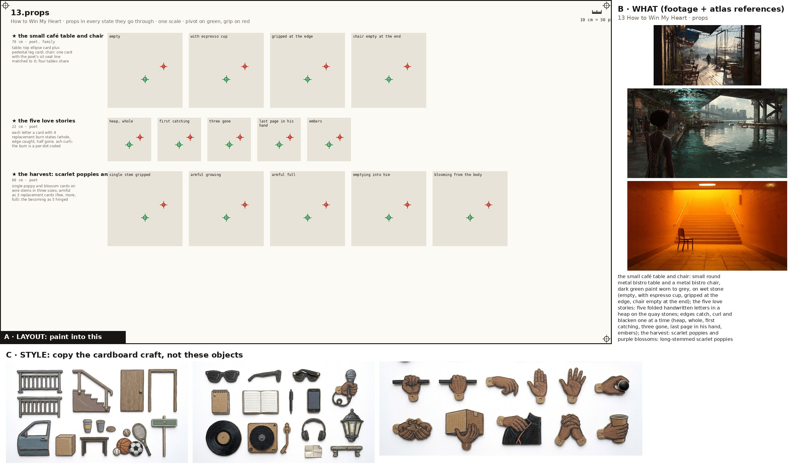
Props, every state props
Paint one sheet of cut-out puppet parts for a paper-puppet film, using the attached image. Panel A is the exact layout, panel B is our footage for these props (reference: copy the object, not the photo style), panel C is the style. STYLE (panel C): flat cards cut from corrugated cardboard, gouache with confident ink linework, the flutes faintly showing through the paint, a thin raw kraft-brown cut edge round every card, brass split-pin brads; shot flat-on, even light, no shadows, no perspective. Copy the craft from C, not the clothes in it. WHAT (panel B): the props of the poem 'How to Win My Heart', one row each, every state of a prop in its own cell, left to right: the small café table and chair: small round metal bistro table and a metal bistro chair, dark green paint worn to grey, on wet stone (empty, with espresso cup, gripped at the edge, chair empty at the end); the five love stories: five folded handwritten letters in a heap on the quay stones; edges catch, curl and blacken one at a time (heap, whole, first catching, three gone, last page in his hand, embers); the harvest: scarlet poppies and purple blossoms: long-stemmed scarlet poppies with black centres and purple blossom spikes, cut and gathered in the crook of his arm; the same flowers then grow out of his hands, shoulders and crown (single stem gripped, armful growing, armful full, emptying into him, blooming from the body); the distant window: a gabled far wall of bonded brick across the water with one lit window, a mullion, a sill, and a woman in red in it (out of focus, wall resolving, her shape resolving, eyes met, lit, held); Jupiter and its moons: a big banded planet low over the harbor in cream and rust, four small cratered moons coming out one by one (planet only, day-pale, first moon, three, four, counted); the two moored boats: small wooden boats with a mast, lying over on the mud at low tide, upright and afloat by the end (aground, lying over, lifting, afloat, sailing out (one)); espresso cup: white espresso cup on a saucer (held, on the table); the sunglasses: the poet's black sunglasses (on, pinched off, held low); pearls and rosary: a long strand of white pearls; a wooden rosary loop (clutched); the quay rail: black iron rail along the quay edge (plain). Paint each state as a flat cardboard prop card at the size its cell gives, the same object across its row; a brass brad on the green cross (its pivot); where there is a red cross, that is where a hand grips it. LAYOUT (panel A): paint one card inside each grey ghost, in the same place, size and angle, inside its dashed outline; a brass brad exactly on every green cross; each red cross must fall inside that card's rounded end. NEVER draw a pelvis, hip, shorts or briefs card (the thighs end in a rounded seat that tucks under the hem), a sleeveless vest, lace-up boots, or sunglasses painted onto a head. OUTPUT: only the painted cards on a pure white 2048x1152 sheet laid out as panel A. Leave out panels B and C, the crosses, labels, ruler, dashed lines and ghosts.
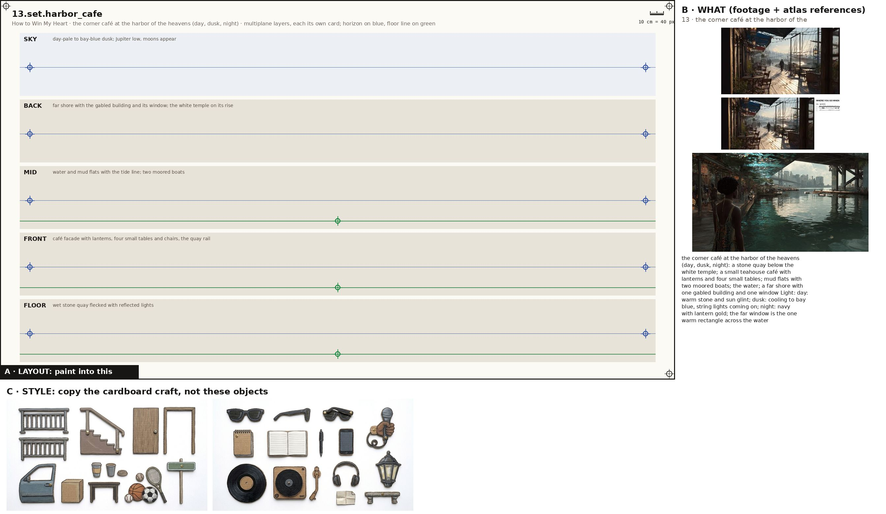
the corner café at the harbor of the heavens (day, dusk, night) set
Paint one sheet of cut-out puppet parts for a paper-puppet film, using the attached image. Panel A is the exact layout, panel B is our footage for this place (reference: copy the place, not the photo style), panel C is the style. STYLE (panel C): flat cards cut from corrugated cardboard, gouache with confident ink linework, the flutes faintly showing through the paint, a thin raw kraft-brown cut edge round every card, brass split-pin brads; shot flat-on, even light, no shadows, no perspective. Copy the craft from C, not the clothes in it. WHAT (panel B): the corner café at the harbor of the heavens (day, dusk, night): a stone quay below the white temple; a small teahouse café with lanterns and four small tables; mud flats with two moored boats; the water; a far shore with one gabled building and one window Light: day: warm stone and sun glint; dusk: cooling to bay blue, string lights coming on; night: navy with lantern gold; the far window is the one warm rectangle across the water. SHEET: the place as five separate flat cardboard layers, one per band, painted to stack front to back in a multiplane rig: SKY: day-pale to bay-blue dusk; Jupiter low, moons appear; BACK: far shore with the gabled building and its window; the white temple on its rise; MID: water and mud flats with the tide line; two moored boats; FRONT: café facade with lanterns, four small tables and chairs, the quay rail; FLOOR: wet stone quay flecked with reflected lights. Each layer is its own card with a clean cut top edge and transparent gaps where the layer behind shows through; keep the horizon on the blue line and the floor on the green line in every band so they register. LAYOUT (panel A): paint one card inside each grey ghost, in the same place, size and angle, inside its dashed outline; a brass brad exactly on every green cross; each red cross must fall inside that card's rounded end. OUTPUT: only the painted cards on a pure white 2048x1152 sheet laid out as panel A. Leave out panels B and C, the crosses, labels, ruler, dashed lines and ghosts.
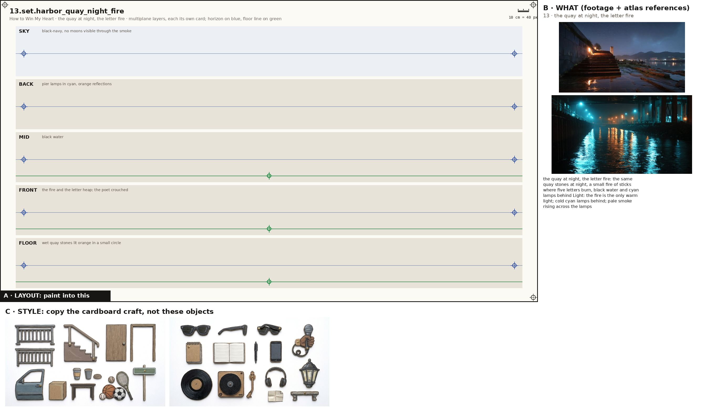
the quay at night, the letter fire set
Paint one sheet of cut-out puppet parts for a paper-puppet film, using the attached image. Panel A is the exact layout, panel B is our footage for this place (reference: copy the place, not the photo style), panel C is the style. STYLE (panel C): flat cards cut from corrugated cardboard, gouache with confident ink linework, the flutes faintly showing through the paint, a thin raw kraft-brown cut edge round every card, brass split-pin brads; shot flat-on, even light, no shadows, no perspective. Copy the craft from C, not the clothes in it. WHAT (panel B): the quay at night, the letter fire: the same quay stones at night, a small fire of sticks where five letters burn, black water and cyan lamps behind Light: the fire is the only warm light; cold cyan lamps behind; pale smoke rising across the lamps. SHEET: the place as five separate flat cardboard layers, one per band, painted to stack front to back in a multiplane rig: SKY: black-navy, no moons visible through the smoke; BACK: pier lamps in cyan, orange reflections; MID: black water; FRONT: the fire and the letter heap; the poet crouched; FLOOR: wet quay stones lit orange in a small circle. Each layer is its own card with a clean cut top edge and transparent gaps where the layer behind shows through; keep the horizon on the blue line and the floor on the green line in every band so they register. LAYOUT (panel A): paint one card inside each grey ghost, in the same place, size and angle, inside its dashed outline; a brass brad exactly on every green cross; each red cross must fall inside that card's rounded end. OUTPUT: only the painted cards on a pure white 2048x1152 sheet laid out as panel A. Leave out panels B and C, the crosses, labels, ruler, dashed lines and ghosts.
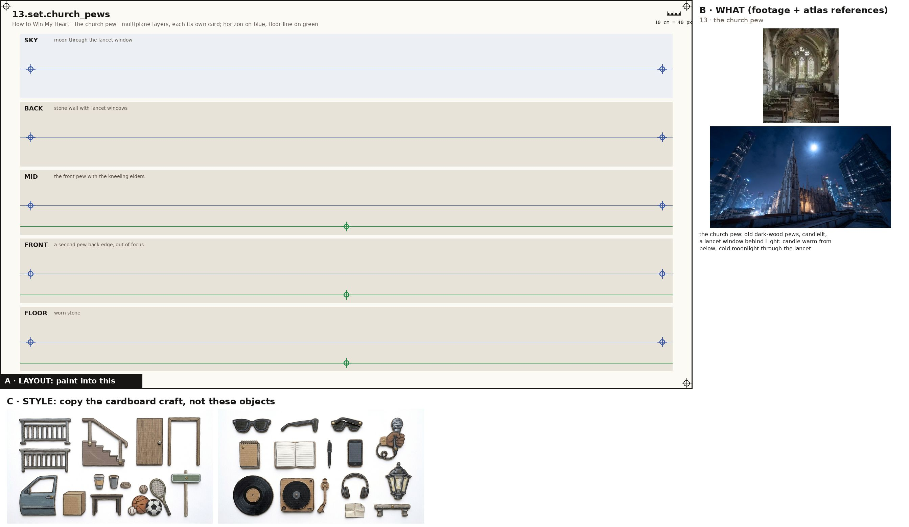
the church pew set
Paint one sheet of cut-out puppet parts for a paper-puppet film, using the attached image. Panel A is the exact layout, panel B is our footage for this place (reference: copy the place, not the photo style), panel C is the style. STYLE (panel C): flat cards cut from corrugated cardboard, gouache with confident ink linework, the flutes faintly showing through the paint, a thin raw kraft-brown cut edge round every card, brass split-pin brads; shot flat-on, even light, no shadows, no perspective. Copy the craft from C, not the clothes in it. WHAT (panel B): the church pew: old dark-wood pews, candlelit, a lancet window behind Light: candle warm from below, cold moonlight through the lancet. SHEET: the place as five separate flat cardboard layers, one per band, painted to stack front to back in a multiplane rig: SKY: moon through the lancet window; BACK: stone wall with lancet windows; MID: the front pew with the kneeling elders; FRONT: a second pew back edge, out of focus; FLOOR: worn stone. Each layer is its own card with a clean cut top edge and transparent gaps where the layer behind shows through; keep the horizon on the blue line and the floor on the green line in every band so they register. LAYOUT (panel A): paint one card inside each grey ghost, in the same place, size and angle, inside its dashed outline; a brass brad exactly on every green cross; each red cross must fall inside that card's rounded end. OUTPUT: only the painted cards on a pure white 2048x1152 sheet laid out as panel A. Leave out panels B and C, the crosses, labels, ruler, dashed lines and ghosts.
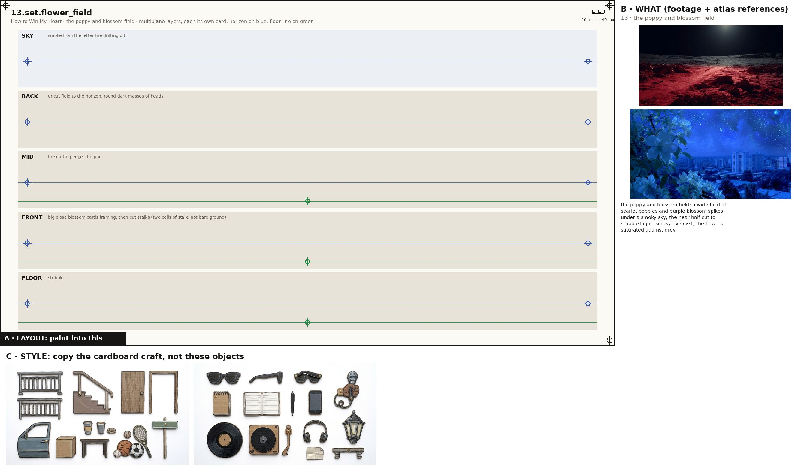
the poppy and blossom field set
Paint one sheet of cut-out puppet parts for a paper-puppet film, using the attached image. Panel A is the exact layout, panel B is our footage for this place (reference: copy the place, not the photo style), panel C is the style. STYLE (panel C): flat cards cut from corrugated cardboard, gouache with confident ink linework, the flutes faintly showing through the paint, a thin raw kraft-brown cut edge round every card, brass split-pin brads; shot flat-on, even light, no shadows, no perspective. Copy the craft from C, not the clothes in it. WHAT (panel B): the poppy and blossom field: a wide field of scarlet poppies and purple blossom spikes under a smoky sky; the near half cut to stubble Light: smoky overcast, the flowers saturated against grey. SHEET: the place as five separate flat cardboard layers, one per band, painted to stack front to back in a multiplane rig: SKY: smoke from the letter fire drifting off; BACK: uncut field to the horizon, round dark masses of heads; MID: the cutting edge, the poet; FRONT: big close blossom cards framing; then cut stalks (two cells of stalk, not bare ground); FLOOR: stubble. Each layer is its own card with a clean cut top edge and transparent gaps where the layer behind shows through; keep the horizon on the blue line and the floor on the green line in every band so they register. LAYOUT (panel A): paint one card inside each grey ghost, in the same place, size and angle, inside its dashed outline; a brass brad exactly on every green cross; each red cross must fall inside that card's rounded end. OUTPUT: only the painted cards on a pure white 2048x1152 sheet laid out as panel A. Leave out panels B and C, the crosses, labels, ruler, dashed lines and ghosts.
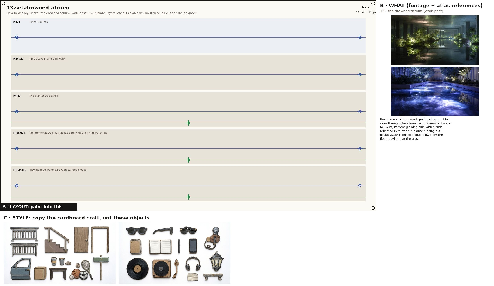
the drowned atrium (walk-past) set
Paint one sheet of cut-out puppet parts for a paper-puppet film, using the attached image. Panel A is the exact layout, panel B is our footage for this place (reference: copy the place, not the photo style), panel C is the style. STYLE (panel C): flat cards cut from corrugated cardboard, gouache with confident ink linework, the flutes faintly showing through the paint, a thin raw kraft-brown cut edge round every card, brass split-pin brads; shot flat-on, even light, no shadows, no perspective. Copy the craft from C, not the clothes in it. WHAT (panel B): the drowned atrium (walk-past): a tower lobby seen through glass from the promenade, flooded to +4 m, its floor glowing blue with clouds reflected in it, trees in planters rising out of the water Light: cool blue glow from the floor, daylight on the glass. SHEET: the place as five separate flat cardboard layers, one per band, painted to stack front to back in a multiplane rig: SKY: none (interior); BACK: far glass wall and dim lobby; MID: two planter-tree cards; FRONT: the promenade's glass facade card with the +4 m water line; FLOOR: glowing blue water card with painted clouds. Each layer is its own card with a clean cut top edge and transparent gaps where the layer behind shows through; keep the horizon on the blue line and the floor on the green line in every band so they register. LAYOUT (panel A): paint one card inside each grey ghost, in the same place, size and angle, inside its dashed outline; a brass brad exactly on every green cross; each red cross must fall inside that card's rounded end. OUTPUT: only the painted cards on a pure white 2048x1152 sheet laid out as panel A. Leave out panels B and C, the crosses, labels, ruler, dashed lines and ghosts.
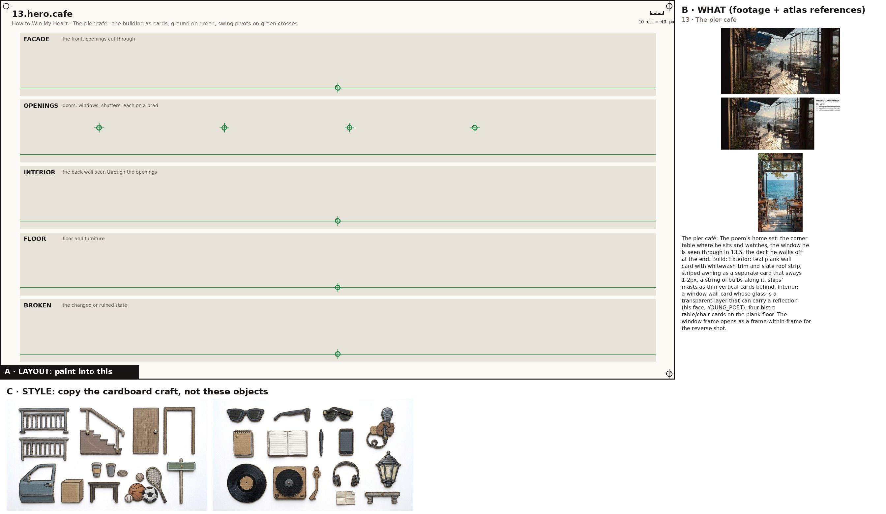
The pier café hero
Paint one sheet of cut-out puppet parts for a paper-puppet film, using the attached image. Panel A is the exact layout, panel B is the atlas reference for this building (copy the building, not the photo style), panel C is the style. STYLE (panel C): flat cards cut from corrugated cardboard, gouache with confident ink linework, the flutes faintly showing through the paint, a thin raw kraft-brown cut edge round every card, brass split-pin brads; shot flat-on, even light, no shadows, no perspective. Copy the craft from C, not the clothes in it. WHAT (panel B): The pier café: The poem's home set: the corner table where he sits and watches, the window he is seen through in 13.5, the deck he walks off at the end. Build: Exterior: teal plank wall card with whitewash trim and slate roof strip, striped awning as a separate card that sways 1-2px, a string of bulbs along it, ships' masts as thin vertical cards behind. Interior: a window wall card whose glass is a transparent layer that can carry a reflection (his face, YOUNG_POET), four bistro table/chair cards on the plank floor. The window frame opens as a frame-within-frame for the reverse shot.. SHEET: the building as separate flat cardboard cards, one per band: the FACADE with its window and door holes cut clean through; the OPENINGS (doors, shutters, windows) as their own cards on a brass brad at the green cross so they swing; the INTERIOR back wall seen through the openings; the FLOOR and furniture; and its BROKEN or changed state where the poem has one. Keep the ground on the green line in every band so the cards register. LAYOUT (panel A): paint one card inside each grey ghost, in the same place, size and angle, inside its dashed outline; a brass brad exactly on every green cross; each red cross must fall inside that card's rounded end. OUTPUT: only the painted cards on a pure white 2048x1152 sheet laid out as panel A. Leave out panels B and C, the crosses, labels, ruler, dashed lines and ghosts. No people on this sheet.
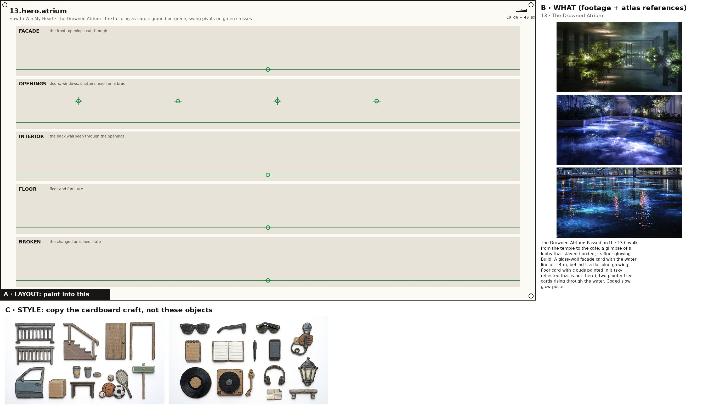
The Drowned Atrium hero
Paint one sheet of cut-out puppet parts for a paper-puppet film, using the attached image. Panel A is the exact layout, panel B is the atlas reference for this building (copy the building, not the photo style), panel C is the style. STYLE (panel C): flat cards cut from corrugated cardboard, gouache with confident ink linework, the flutes faintly showing through the paint, a thin raw kraft-brown cut edge round every card, brass split-pin brads; shot flat-on, even light, no shadows, no perspective. Copy the craft from C, not the clothes in it. WHAT (panel B): The Drowned Atrium: Passed on the 13.0 walk from the temple to the café: a glimpse of a lobby that stayed flooded, its floor glowing. Build: A glass-wall facade card with the water line at +4 m, behind it a flat blue-glowing floor card with clouds painted in it (sky reflected that is not there), two planter-tree cards rising through the water. Coded slow glow pulse.. SHEET: the building as separate flat cardboard cards, one per band: the FACADE with its window and door holes cut clean through; the OPENINGS (doors, shutters, windows) as their own cards on a brass brad at the green cross so they swing; the INTERIOR back wall seen through the openings; the FLOOR and furniture; and its BROKEN or changed state where the poem has one. Keep the ground on the green line in every band so the cards register. LAYOUT (panel A): paint one card inside each grey ghost, in the same place, size and angle, inside its dashed outline; a brass brad exactly on every green cross; each red cross must fall inside that card's rounded end. OUTPUT: only the painted cards on a pure white 2048x1152 sheet laid out as panel A. Leave out panels B and C, the crosses, labels, ruler, dashed lines and ghosts. No people on this sheet.
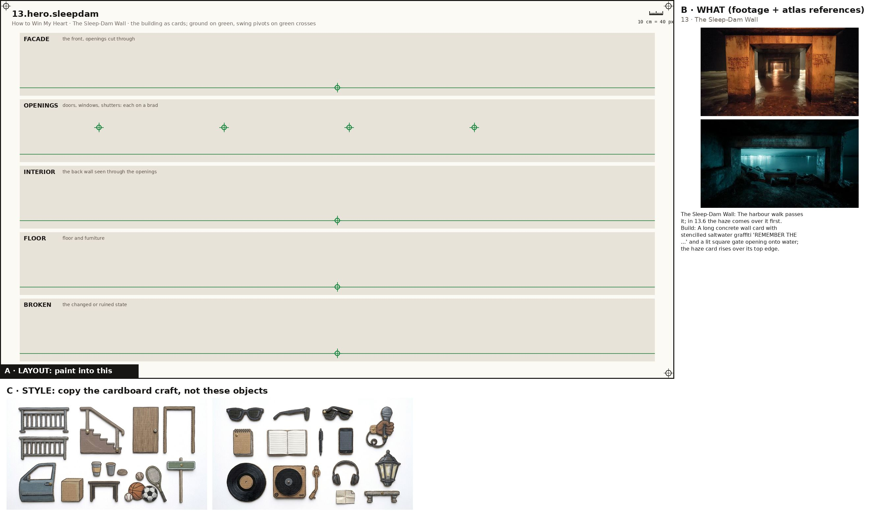
The Sleep-Dam Wall hero
Paint one sheet of cut-out puppet parts for a paper-puppet film, using the attached image. Panel A is the exact layout, panel B is the atlas reference for this building (copy the building, not the photo style), panel C is the style. STYLE (panel C): flat cards cut from corrugated cardboard, gouache with confident ink linework, the flutes faintly showing through the paint, a thin raw kraft-brown cut edge round every card, brass split-pin brads; shot flat-on, even light, no shadows, no perspective. Copy the craft from C, not the clothes in it. WHAT (panel B): The Sleep-Dam Wall: The harbour walk passes it; in 13.6 the haze comes over it first. Build: A long concrete wall card with stencilled saltwater graffiti 'REMEMBER THE ...' and a lit square gate opening onto water; the haze card rises over its top edge.. SHEET: the building as separate flat cardboard cards, one per band: the FACADE with its window and door holes cut clean through; the OPENINGS (doors, shutters, windows) as their own cards on a brass brad at the green cross so they swing; the INTERIOR back wall seen through the openings; the FLOOR and furniture; and its BROKEN or changed state where the poem has one. Keep the ground on the green line in every band so the cards register. LAYOUT (panel A): paint one card inside each grey ghost, in the same place, size and angle, inside its dashed outline; a brass brad exactly on every green cross; each red cross must fall inside that card's rounded end. OUTPUT: only the painted cards on a pure white 2048x1152 sheet laid out as panel A. Leave out panels B and C, the crosses, labels, ruler, dashed lines and ghosts. No people on this sheet.
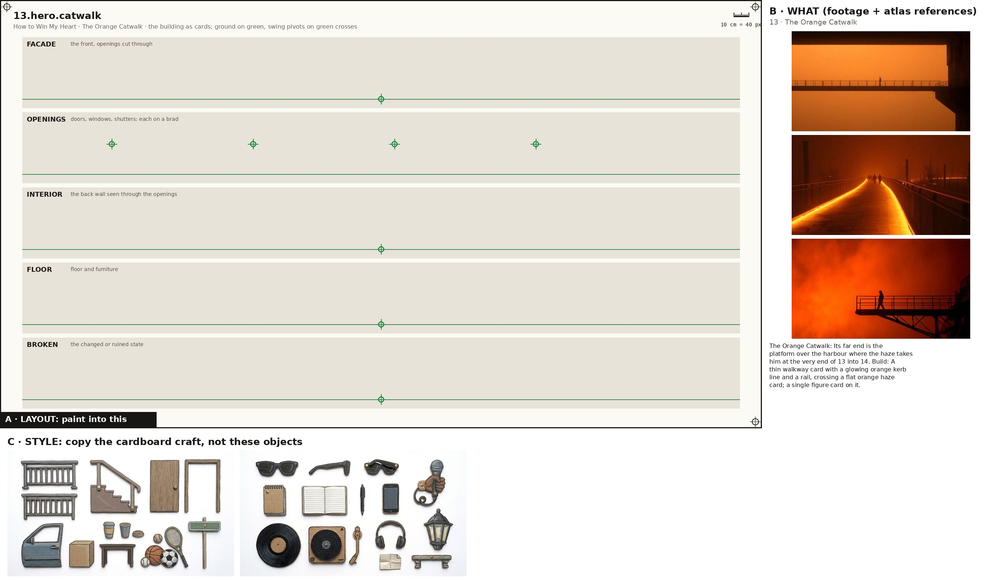
The Orange Catwalk hero
Paint one sheet of cut-out puppet parts for a paper-puppet film, using the attached image. Panel A is the exact layout, panel B is the atlas reference for this building (copy the building, not the photo style), panel C is the style. STYLE (panel C): flat cards cut from corrugated cardboard, gouache with confident ink linework, the flutes faintly showing through the paint, a thin raw kraft-brown cut edge round every card, brass split-pin brads; shot flat-on, even light, no shadows, no perspective. Copy the craft from C, not the clothes in it. WHAT (panel B): The Orange Catwalk: Its far end is the platform over the harbour where the haze takes him at the very end of 13 into 14. Build: A thin walkway card with a glowing orange kerb line and a rail, crossing a flat orange haze card; a single figure card on it.. SHEET: the building as separate flat cardboard cards, one per band: the FACADE with its window and door holes cut clean through; the OPENINGS (doors, shutters, windows) as their own cards on a brass brad at the green cross so they swing; the INTERIOR back wall seen through the openings; the FLOOR and furniture; and its BROKEN or changed state where the poem has one. Keep the ground on the green line in every band so the cards register. LAYOUT (panel A): paint one card inside each grey ghost, in the same place, size and angle, inside its dashed outline; a brass brad exactly on every green cross; each red cross must fall inside that card's rounded end. OUTPUT: only the painted cards on a pure white 2048x1152 sheet laid out as panel A. Leave out panels B and C, the crosses, labels, ruler, dashed lines and ghosts. No people on this sheet.
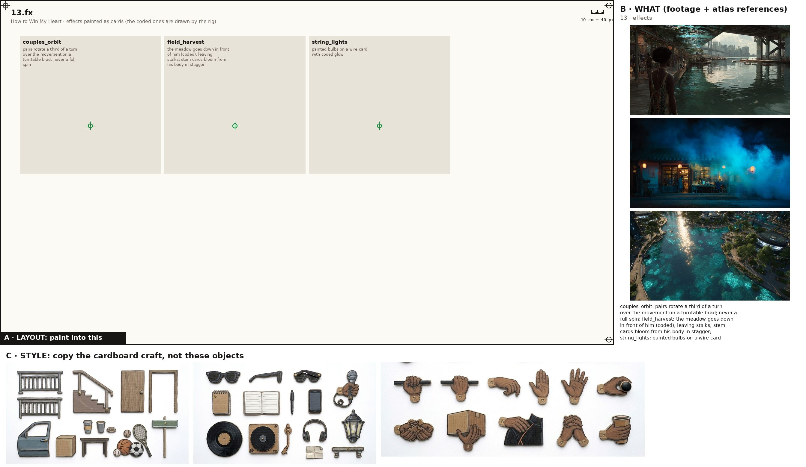
Painted effects fx
Paint one sheet of cut-out puppet parts for a paper-puppet film, using the attached image. Panel A is the exact layout, panel B is our footage for the mood, panel C is the style. STYLE (panel C): flat cards cut from corrugated cardboard, gouache with confident ink linework, the flutes faintly showing through the paint, a thin raw kraft-brown cut edge round every card, brass split-pin brads; shot flat-on, even light, no shadows, no perspective. Copy the craft from C, not the clothes in it. WHAT: the poem's painted effects, one per cell, as flat cardboard cards that a cut-out film moves in front of the camera: couples_orbit: pairs rotate a third of a turn over the movement on a turntable brad; never a full spin; field_harvest: the meadow goes down in front of him (coded), leaving stalks; stem cards bloom from his body in stagger; string_lights: painted bulbs on a wire card with coded glow. A brass brad on the green cross of each. LAYOUT (panel A): paint one card inside each grey ghost, in the same place, size and angle, inside its dashed outline; a brass brad exactly on every green cross; each red cross must fall inside that card's rounded end. NEVER draw a pelvis, hip, shorts or briefs card (the thighs end in a rounded seat that tucks under the hem), a sleeveless vest, lace-up boots, or sunglasses painted onto a head. OUTPUT: only the painted cards on a pure white 2048x1152 sheet laid out as panel A. Leave out panels B and C, the crosses, labels, ruler, dashed lines and ghosts.